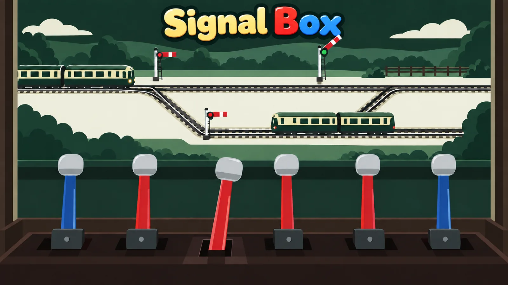
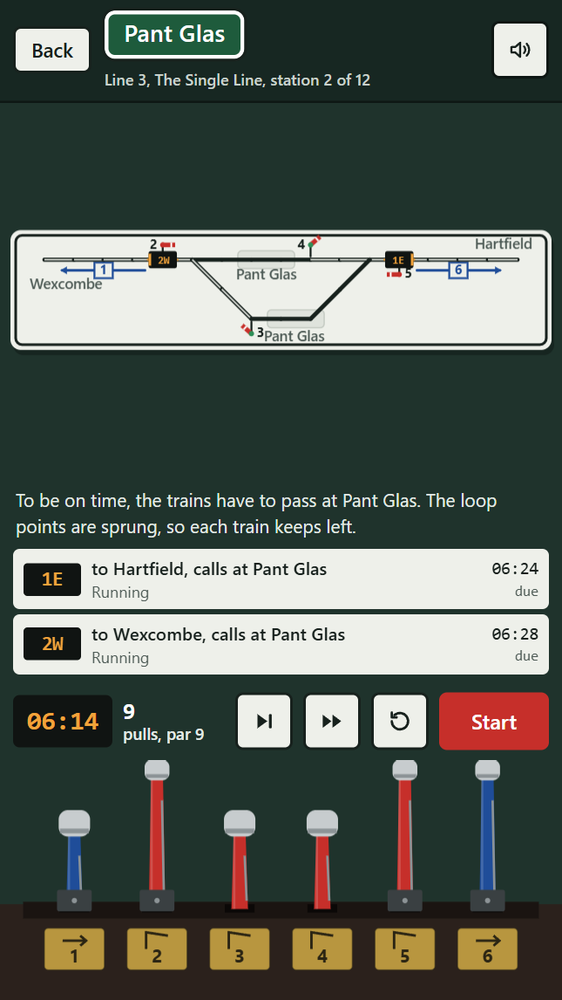

Actual gameplayPull the levers, run the railway
A railway signal box, with an enamel track diagram on the wall and a lever frame on the floor. Every station is a puzzle: a diagram, a row of levers and a timetable. Set the points, clear the signals, and bring every train to its platform without two of them meeting. The trains run on a clock you can start, stop and step one minute at a time.